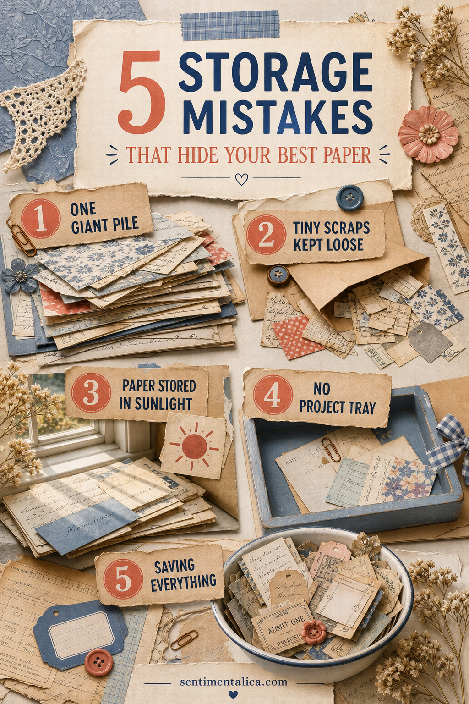
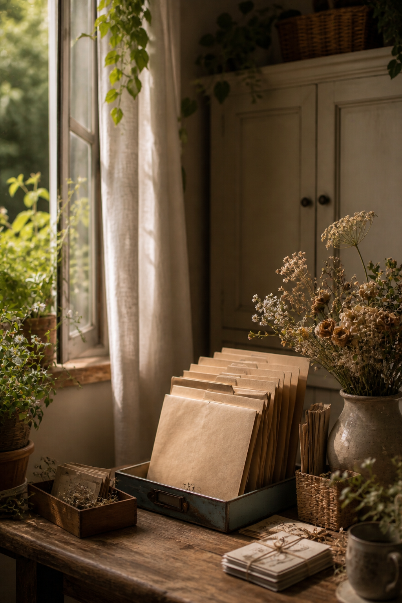

A paper collection can be beautifully organized and still be difficult to use. The real test is simple: can you find a suitable piece while an idea is still warm?

One giant pile
Mixed stacks hide scale, color, and material. Divide paper by the way you reach for it: full sheets, page-size pieces, small layering scraps, and writing cards. Four broad homes are easier to maintain than dozens of perfect categories.
Tiny scraps kept loose
Small pieces drift to the bottom of drawers. Give them one shallow envelope or open tray, and sort only by warm, cool, and neutral if needed. When the container fills, make tags or release the scraps you no longer notice.
Paper stored in direct sunlight
Windows make a workspace inviting, but strong light fades printed and dyed paper. Keep long-term supplies in a closed folder or cabinet. Place only the current project tray near the window, then return it when the session ends.

No project tray
Without a temporary home, every pause becomes a cleanup decision. Use one tray for the journal, chosen papers, and unfinished pieces. It protects your work and lets you restart without searching through the entire collection.
Saving everything
A scrap is useful only if its color, texture, size, or memory makes you want to reach for it. Keep a small discard bowl beside the cutting area. Recycle plain pieces and retain the ones that immediately suggest a label, border, pocket, or story.
Try a ten-minute reset
Collect all loose paper, return full sheets first, place useful small scraps in their one container, and build tomorrow's project tray. Do not reorganize the entire room. A repeatable reset matters more than a dramatic storage makeover.
Store by size before theme
A floral page and a ledger page may work beautifully together, but they disappear when every theme has its own deep box. Size is usually the faster first decision. Keep full sheets upright, medium pieces in shallow folders, and tiny accents in one visible container. Add color dividers only if a category becomes too full to scan.
Create a small favorites file
Choose ten papers you would happily use this month and keep them at the front. This is not permanent storage; it is a rotating invitation. Replace a paper when you use it or when it stops inspiring you. Favorites deserve visibility rather than protection at the bottom of a drawer.
Protect old and delicate paper
Place brittle book pages and original letters in acid-free sleeves or folders. Keep them dry, out of strong light, and separate from damp dyed papers. If an item has family or financial value, make a working copy for the journal and preserve the original elsewhere.
Label only what saves time
A label such as “writing cards” helps because it describes a job. A label for every shade and motif can make returning scraps feel like administration. Begin broad, notice where you hesitate, and add one label only where confusion repeatedly occurs.
Your best system is the one that lets you begin. If a beautiful box makes materials invisible, replace it with a plain folder you actually open.
Image note: Some visuals in this article were created with AI and curated by Sentimentalica.